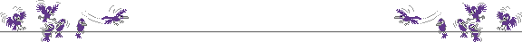
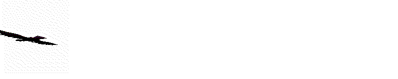

Wilbers Skomer Homepage
Welcome to my new look website! The site had got so large after years of gradual additions that drastic action was required. So thank you for visiting and I hope you find something of interest. Any comments welcome on holcus@hotmail.com

| About Skomer | Sign My Guestbook | About me |
| Skomer Bits & Pieces |
|
My life in Aber |
| My Work | View My Guestbook | Links |

| Number of visitors since 20 December 1999: | Quick links: | |
|
|
|
"The information provided on this and other pages by me, Elizabeth Wilberforce, is under my own personal responsibility and not that of the University of Wales, Aberystwyth. Similarly, any opinions expressed are my own and are in no way to be taken as those of the UWA"
Last updated by Lizzie on 23 February 2003 Let me know if you have trouble with anything on the site...